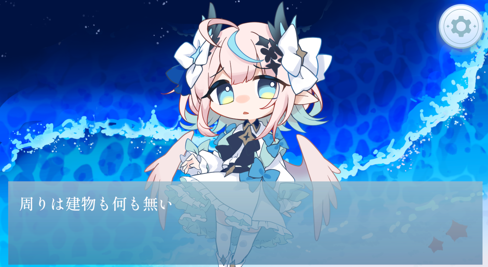
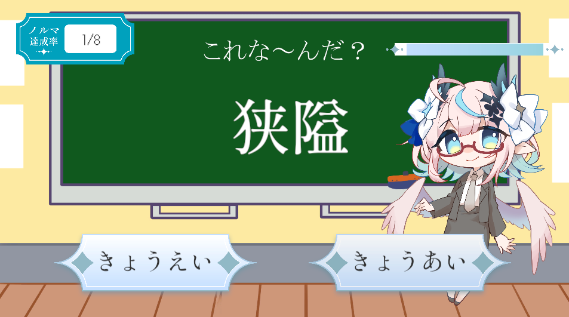
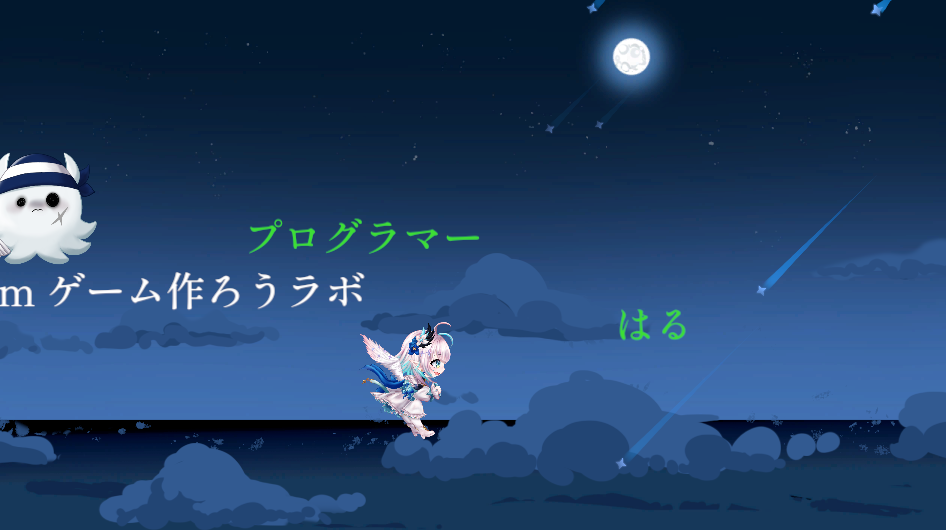

OVERVIEW
概要
Another Blue は、約1週間の短期ゲームジャム形式で制作したUnity製ゲームです。 Vtuberの方とのコラボ企画として制作され、UnityroomとSteamで公開しました。
短期間で完成まで持っていく必要があったため、 ゲーム全体の雰囲気や難易度感をチームで共有しながら、 配信で見ても楽しめる体験を意識して開発しました。
CONCEPT
制作で意識したこと
配信映えを意識したゲーム設計
配信されることが決まっていたため、 プレイヤー本人だけでなく、見ている人も楽しめるように意識しました。
雰囲気の統一
ノベル、ミニゲーム、演出がバラバラにならないように、 チームで作品全体の雰囲気をすり合わせながら制作しました。
難易度感の調整
短時間で遊ばれることを想定し、 難しすぎず、見ていても分かりやすい難易度感になるように意識しました。
ROLE
担当したこと
ノベルパート
ゲーム内の会話やストーリー進行に関わるノベル部分を担当しました。
ミニゲーム
作品内に含まれるミニゲームのうち、一部の実装を担当しました。
エンディングゲーム
最後まで遊んだときの体験につながる、エンディング部分のゲーム要素を担当しました。
場面転換
ノベルパートやゲームパートの切り替わりが自然になるよう、 場面転換まわりの処理を担当しました。
TEAM
チームでこだわったこと
Another Blue では、短期間で複数人がそれぞれの担当を進める必要がありました。 ゲーム全体としてどのような雰囲気にするか、どのくらいの難易度にするかを共有しながら制作しました。
特に、Vtuberの方とのコラボ企画として配信されることを前提としていたため、 視聴者にも状況が伝わりやすく楽しめるかを意識しました。
RELEASE
公開
Unityroomで公開
ブラウザ上で遊べる形としてUnityroomに公開しました。
Steamでリリース
Steamにもリリースし、短期制作の作品を実際にユーザーへ届ける経験になりました。
配信前提の制作
コラボ企画として配信されることを前提に、 見ている人にも楽しさが伝わるゲーム体験を意識しました。
IMAGES
画面イメージ



LEARNING
この制作で得たこと
短期制作では、限られた時間の中で何を優先して作るかを判断することが重要だと学びました。 また、配信されることを前提にした制作を通して、 実際にプレイする人だけでなく、見ている人にも伝わるゲーム設計の大切さを感じました。